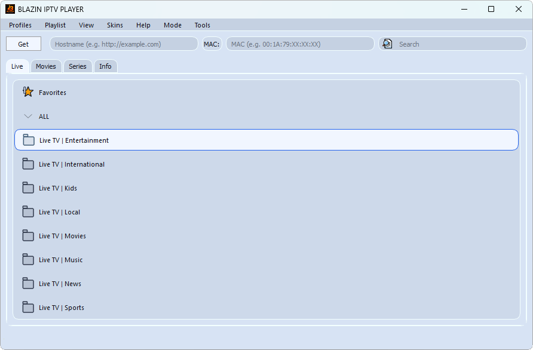

Source compatibility
BLAZIN supports M3U, M3U Plus, Xtream Codes, STB MAC, and Stalker Portal workflows.
If you are comparing IPTVnator with another Windows IPTV player, evaluate the workflows that matter for your own legal source. BLAZIN focuses on several playlist and portal login types in a compact Windows app.
Windows IPTV workflow
Feature availability in IPTVnator can vary by release and platform. Instead of assuming a missing feature, compare current versions using your actual source format, guide data, navigation habits, and preferred playback method.

What BLAZIN supports
BLAZIN supports M3U, M3U Plus, Xtream Codes, STB MAC, and Stalker Portal workflows.
Test source-provided categories, Live TV, Movies, Series, EPG, logos, posters, search, and favorites.
Compare integrated playback with external VLC, MPC-HC, or MPC-BE workflows.
7-day trial checklist
FAQ
No. IPTVnator capabilities can vary by version and platform. This page explains what BLAZIN supports so you can compare current products yourself.
No. BLAZIN is player-only software for your own legal IPTV source.
Related guides
Review this focused guide and compare it with the source and Windows workflow you use.
Review this focused guide and compare it with the source and Windows workflow you use.
Review this focused guide and compare it with the source and Windows workflow you use.
Microsoft Store
Install the Windows app, add your own legal IPTV source, and test the supported workflow on your PC.
No channels, playlists, subscriptions, provider accounts, or copyrighted content are included.